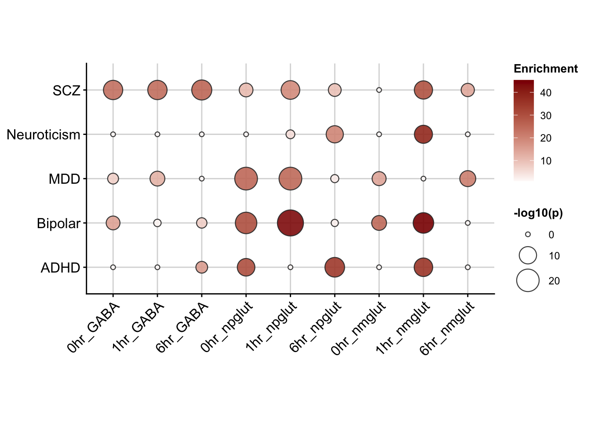
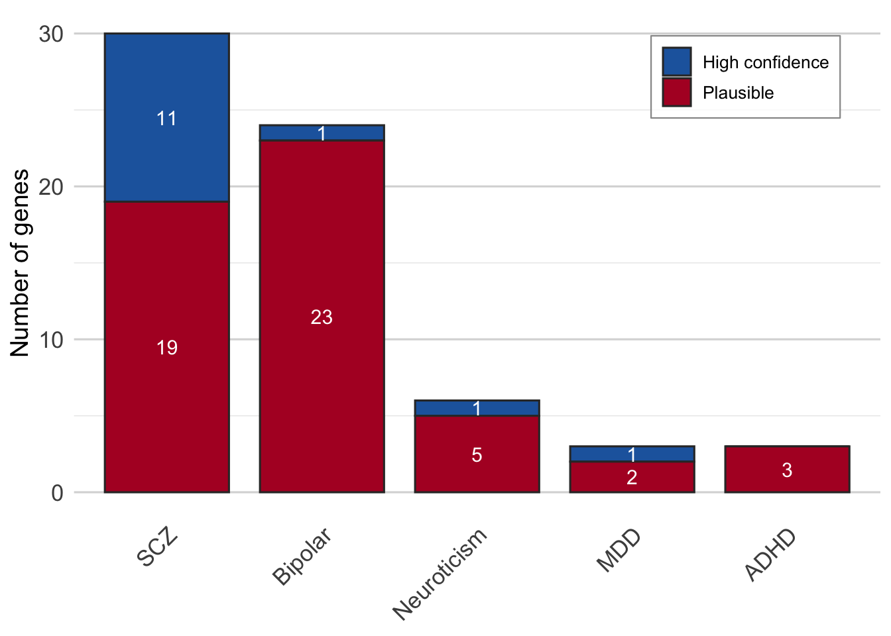
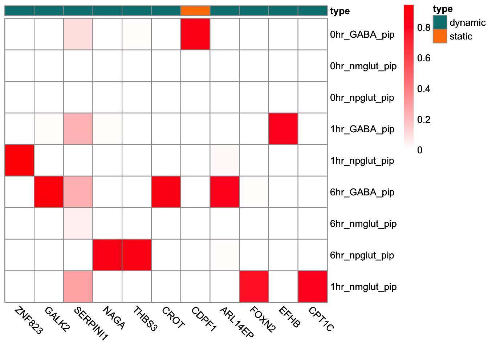
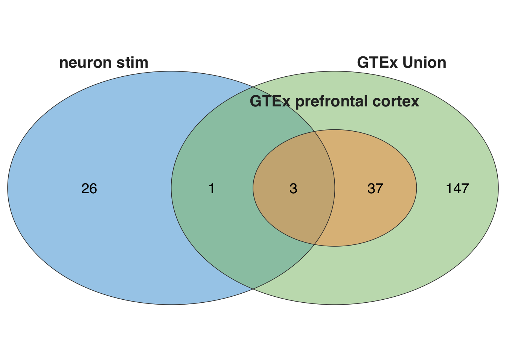
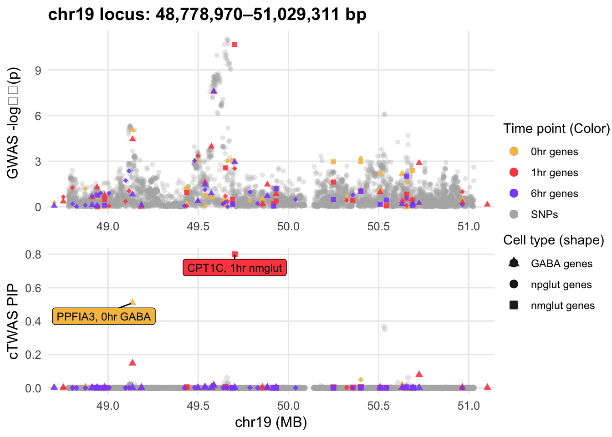
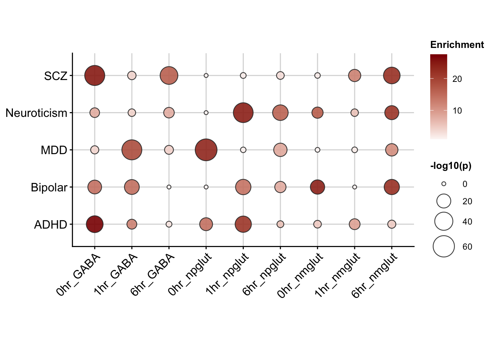
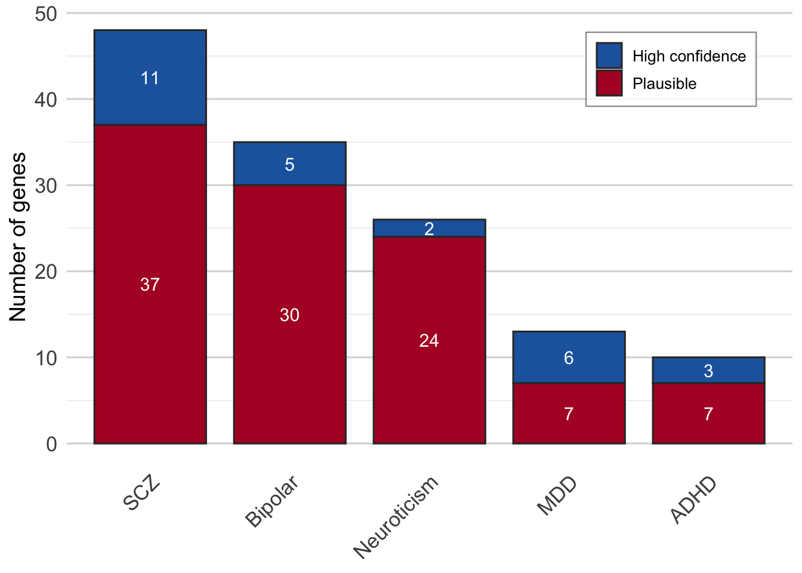
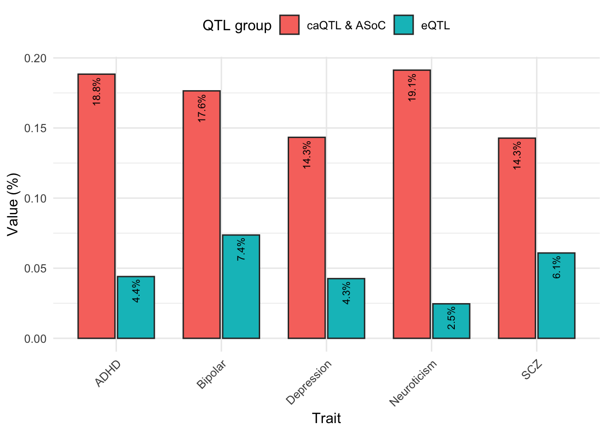

Updated cTWAS results
Lifan Liang
2025-12-14
Last updated: 2025-12-16
Checks: 7 0
Knit directory: neuron_stim_eQTL100/
This reproducible R Markdown analysis was created with workflowr (version 1.7.2). The Checks tab describes the reproducibility checks that were applied when the results were created. The Past versions tab lists the development history.
Great! Since the R Markdown file has been committed to the Git repository, you know the exact version of the code that produced these results.
Great job! The global environment was empty. Objects defined in the global environment can affect the analysis in your R Markdown file in unknown ways. For reproduciblity it’s best to always run the code in an empty environment.
The command set.seed(20231109) was run prior to running
the code in the R Markdown file. Setting a seed ensures that any results
that rely on randomness, e.g. subsampling or permutations, are
reproducible.
Great job! Recording the operating system, R version, and package versions is critical for reproducibility.
Nice! There were no cached chunks for this analysis, so you can be confident that you successfully produced the results during this run.
Great job! Using relative paths to the files within your workflowr project makes it easier to run your code on other machines.
Great! You are using Git for version control. Tracking code development and connecting the code version to the results is critical for reproducibility.
The results in this page were generated with repository version 808683d. See the Past versions tab to see a history of the changes made to the R Markdown and HTML files.
Note that you need to be careful to ensure that all relevant files for
the analysis have been committed to Git prior to generating the results
(you can use wflow_publish or
wflow_git_commit). workflowr only checks the R Markdown
file, but you know if there are other scripts or data files that it
depends on. Below is the status of the Git repository when the results
were generated:
Ignored files:
Ignored: .DS_Store
Ignored: .RData
Ignored: .Rhistory
Ignored: data/.DS_Store
Ignored: data/new_ctwas/.DS_Store
Ignored: data/single_group_ctwas/.DS_Store
Untracked files:
Untracked: Fig15SE_dynamic_count_eqtl_ctwas.pdf
Untracked: GTEx_vs_SCZ.pdf.2024-08-26_21-04-15.log
Untracked: GTEx_vs_SCZ.png
Untracked: GTEx_vs_SCZ.tiff
Untracked: GTEx_vs_SCZ.tiff.2024-08-26_21-04-43.log
Untracked: Rplot.png
Untracked: VennDiagram.2025-12-09_12-31-07.log
Untracked: VennDiagram.2025-12-11_15-10-56.log
Untracked: VennDiagram.2025-12-15_11-28-17.log
Untracked: VennDiagram.2025-12-15_11-38-59.log
Untracked: VennDiagram.2025-12-15_20-45-07.log
Untracked: VennDiagram.2025-12-15_20-45-13.log
Untracked: VennDiagram.2025-12-15_20-45-52.log
Untracked: VennDiagram.2025-12-15_20-47-07.log
Untracked: VennDiagram.2025-12-15_20-52-04.log
Untracked: VennDiagram.2025-12-15_20-52-25.log
Untracked: VennDiagram.2025-12-15_20-52-34.log
Untracked: VennDiagram.2025-12-15_20-53-22.log
Untracked: VennDiagram.2025-12-15_20-53-41.log
Untracked: VennDiagram.2025-12-15_20-54-36.log
Untracked: VennDiagram.2025-12-15_20-58-27.log
Untracked: VennDiagram.2025-12-15_20-58-33.log
Untracked: VennDiagram.2025-12-16_10-34-27.log
Untracked: VennDiagram.2025-12-16_10-34-28.log
Untracked: VennDiagram.2025-12-16_14-44-15.log
Untracked: VennDiagram.2025-12-16_14-44-16.log
Untracked: VennDiagram.2025-12-16_14-58-50.log
Untracked: data/pi1_vs_jb_dopamin.txt
Untracked: data/pi1_with_gtex.txt
Untracked: geneMapping.rds
Untracked: mouse_sesenory_experince_inh.csv
Untracked: mouse_sesenory_experince_inh.csv.numbers
Untracked: plot4pdf.R
Note that any generated files, e.g. HTML, png, CSS, etc., are not included in this status report because it is ok for generated content to have uncommitted changes.
These are the previous versions of the repository in which changes were
made to the R Markdown (analysis/updated_ctwas.Rmd) and
HTML (docs/updated_ctwas.html) files. If you’ve configured
a remote Git repository (see ?wflow_git_remote), click on
the hyperlinks in the table below to view the files as they were in that
past version.
| File | Version | Author | Date | Message |
|---|---|---|---|---|
| Rmd | 808683d | Lifan Liang | 2025-12-16 | wflow_publish("analysis") |
| html | 35a2996 | Lifan Liang | 2025-12-16 | Build site. |
| Rmd | b273c13 | Lifan Liang | 2025-12-16 | wflow_publish("analysis") |
| html | 6aa96c5 | Lifan Liang | 2025-12-15 | Build site. |
| Rmd | ef22e25 | Lifan Liang | 2025-12-15 | wflow_publish("analysis") |
eQTL cTWAS results
The manuscript Figure 4 should be replaced by figures generated here
Dotplot for enrichment
Attaching package: 'dplyr'The following objects are masked from 'package:stats':
filter, lagThe following objects are masked from 'package:base':
intersect, setdiff, setequal, union
| Version | Author | Date |
|---|---|---|
| 6aa96c5 | Lifan Liang | 2025-12-15 |
Number of risk genes across traits
2025-12-16 16:47:59 INFO::Compute combined PIPs...
2025-12-16 16:48:00 INFO::Compute combined PIPs...
2025-12-16 16:48:00 INFO::Compute combined PIPs...
2025-12-16 16:48:01 INFO::Compute combined PIPs...
2025-12-16 16:48:03 INFO::Compute combined PIPs...Warning: The `size` argument of `element_rect()` is deprecated as of ggplot2 3.4.0.
ℹ Please use the `linewidth` argument instead.
This warning is displayed once every 8 hours.
Call `lifecycle::last_lifecycle_warnings()` to see where this warning was
generated.
| Version | Author | Date |
|---|---|---|
| 6aa96c5 | Lifan Liang | 2025-12-15 |
For example usage please run: vignette('qqman')Citation appreciated but not required:Turner, (2018). qqman: an R package for visualizing GWAS results using Q-Q and manhattan plots. Journal of Open Source Software, 3(25), 731, https://doi.org/10.21105/joss.00731.quartz_off_screen
2 Heatmap for gene PIP across contexts for SCZ
High confidence genes (PIP>80%)

| Version | Author | Date |
|---|---|---|
| 35a2996 | Lifan Liang | 2025-12-16 |
quartz_off_screen
2 Plausible risk genes (PIP>50%)

| Version | Author | Date |
|---|---|---|
| 35a2996 | Lifan Liang | 2025-12-16 |
quartz_off_screen
2 Comparison with GTEx brain tissues
Cutoff at PIP>50% for both neuront stimulation and GTEx brain tissues
Loading required package: futile.logger
| Version | Author | Date |
|---|---|---|
| 35a2996 | Lifan Liang | 2025-12-16 |
quartz_off_screen
2 Cutoff at PIP>80% for both neuront stimulation and GTEx brain tissues

quartz_off_screen
2 Locus plot for CPT1C
── Attaching core tidyverse packages ──────────────────────── tidyverse 2.0.0 ──
✔ forcats 1.0.1 ✔ stringr 1.6.0
✔ lubridate 1.9.2 ✔ tibble 3.3.0
✔ purrr 1.2.0 ✔ tidyr 1.3.0
✔ readr 2.1.4
── Conflicts ────────────────────────────────────────── tidyverse_conflicts() ──
✖ dplyr::filter() masks stats::filter()
✖ dplyr::lag() masks stats::lag()
ℹ Use the conflicted package (<http://conflicted.r-lib.org/>) to force all conflicts to become errors
Attaching package: 'scales'
The following object is masked from 'package:purrr':
discard
The following object is masked from 'package:readr':
col_factor
Attaching package: 'cowplot'
The following object is masked from 'package:lubridate':
stamp
Warning in grid.Call(C_textBounds, as.graphicsAnnot(x$label), x$x, x$y, :
conversion failure on 'GWAS -log₁₀(p)' in 'mbcsToSbcs': dot substituted for
<e2>Warning in grid.Call(C_textBounds, as.graphicsAnnot(x$label), x$x, x$y, :
conversion failure on 'GWAS -log₁₀(p)' in 'mbcsToSbcs': dot substituted for
<82>Warning in grid.Call(C_textBounds, as.graphicsAnnot(x$label), x$x, x$y, :
conversion failure on 'GWAS -log₁₀(p)' in 'mbcsToSbcs': dot substituted for
<81>Warning in grid.Call(C_textBounds, as.graphicsAnnot(x$label), x$x, x$y, :
conversion failure on 'GWAS -log₁₀(p)' in 'mbcsToSbcs': dot substituted for
<e2>Warning in grid.Call(C_textBounds, as.graphicsAnnot(x$label), x$x, x$y, :
conversion failure on 'GWAS -log₁₀(p)' in 'mbcsToSbcs': dot substituted for
<82>Warning in grid.Call(C_textBounds, as.graphicsAnnot(x$label), x$x, x$y, :
conversion failure on 'GWAS -log₁₀(p)' in 'mbcsToSbcs': dot substituted for
<80>Warning in grid.Call.graphics(C_text, as.graphicsAnnot(x$label), x$x, x$y, :
conversion failure on 'GWAS -log₁₀(p)' in 'mbcsToSbcs': dot substituted for
<e2>Warning in grid.Call.graphics(C_text, as.graphicsAnnot(x$label), x$x, x$y, :
conversion failure on 'GWAS -log₁₀(p)' in 'mbcsToSbcs': dot substituted for
<82>Warning in grid.Call.graphics(C_text, as.graphicsAnnot(x$label), x$x, x$y, :
conversion failure on 'GWAS -log₁₀(p)' in 'mbcsToSbcs': dot substituted for
<81>Warning in grid.Call.graphics(C_text, as.graphicsAnnot(x$label), x$x, x$y, :
conversion failure on 'GWAS -log₁₀(p)' in 'mbcsToSbcs': dot substituted for
<e2>Warning in grid.Call.graphics(C_text, as.graphicsAnnot(x$label), x$x, x$y, :
conversion failure on 'GWAS -log₁₀(p)' in 'mbcsToSbcs': dot substituted for
<82>Warning in grid.Call.graphics(C_text, as.graphicsAnnot(x$label), x$x, x$y, :
conversion failure on 'GWAS -log₁₀(p)' in 'mbcsToSbcs': dot substituted for
<80>Warning in grid.Call.graphics(C_text, as.graphicsAnnot(x$label), x$x, x$y, :
conversion failure on 'GWAS -log₁₀(p)' in 'mbcsToSbcs': dot substituted for
<e2>Warning in grid.Call.graphics(C_text, as.graphicsAnnot(x$label), x$x, x$y, :
conversion failure on 'GWAS -log₁₀(p)' in 'mbcsToSbcs': dot substituted for
<82>Warning in grid.Call.graphics(C_text, as.graphicsAnnot(x$label), x$x, x$y, :
conversion failure on 'GWAS -log₁₀(p)' in 'mbcsToSbcs': dot substituted for
<81>Warning in grid.Call.graphics(C_text, as.graphicsAnnot(x$label), x$x, x$y, :
conversion failure on 'GWAS -log₁₀(p)' in 'mbcsToSbcs': dot substituted for
<e2>Warning in grid.Call.graphics(C_text, as.graphicsAnnot(x$label), x$x, x$y, :
conversion failure on 'GWAS -log₁₀(p)' in 'mbcsToSbcs': dot substituted for
<82>Warning in grid.Call.graphics(C_text, as.graphicsAnnot(x$label), x$x, x$y, :
conversion failure on 'GWAS -log₁₀(p)' in 'mbcsToSbcs': dot substituted for
<80>Warning in grid.Call(C_textBounds, as.graphicsAnnot(x$label), x$x, x$y, :
conversion failure on 'GWAS -log₁₀(p)' in 'mbcsToSbcs': dot substituted for
<e2>Warning in grid.Call(C_textBounds, as.graphicsAnnot(x$label), x$x, x$y, :
conversion failure on 'GWAS -log₁₀(p)' in 'mbcsToSbcs': dot substituted for
<82>Warning in grid.Call(C_textBounds, as.graphicsAnnot(x$label), x$x, x$y, :
conversion failure on 'GWAS -log₁₀(p)' in 'mbcsToSbcs': dot substituted for
<81>Warning in grid.Call(C_textBounds, as.graphicsAnnot(x$label), x$x, x$y, :
conversion failure on 'GWAS -log₁₀(p)' in 'mbcsToSbcs': dot substituted for
<e2>Warning in grid.Call(C_textBounds, as.graphicsAnnot(x$label), x$x, x$y, :
conversion failure on 'GWAS -log₁₀(p)' in 'mbcsToSbcs': dot substituted for
<82>Warning in grid.Call(C_textBounds, as.graphicsAnnot(x$label), x$x, x$y, :
conversion failure on 'GWAS -log₁₀(p)' in 'mbcsToSbcs': dot substituted for
<80>caQTL cTWAS results
Dotplot for enrichment

Number of risk genes across traits
2025-12-16 16:48:34 INFO::Compute combined PIPs...
2025-12-16 16:48:39 INFO::Compute combined PIPs...
2025-12-16 16:48:41 INFO::Compute combined PIPs...
2025-12-16 16:48:48 INFO::Compute combined PIPs...
2025-12-16 16:48:58 INFO::Compute combined PIPs...
| Version | Author | Date |
|---|---|---|
| 35a2996 | Lifan Liang | 2025-12-16 |
Heritability of caQTL vs. eQTL

sessionInfo()R version 4.1.2 (2021-11-01)
Platform: x86_64-apple-darwin17.0 (64-bit)
Running under: macOS Big Sur 10.16
Matrix products: default
BLAS: /Library/Frameworks/R.framework/Versions/4.1/Resources/lib/libRblas.0.dylib
LAPACK: /Library/Frameworks/R.framework/Versions/4.1/Resources/lib/libRlapack.dylib
locale:
[1] en_US.UTF-8/en_US.UTF-8/en_US.UTF-8/C/en_US.UTF-8/en_US.UTF-8
attached base packages:
[1] grid stats graphics grDevices utils datasets methods
[8] base
other attached packages:
[1] ggrepel_0.9.3 cowplot_1.2.0 scales_1.4.0
[4] lubridate_1.9.2 forcats_1.0.1 stringr_1.6.0
[7] purrr_1.2.0 readr_2.1.4 tidyr_1.3.0
[10] tibble_3.3.0 tidyverse_2.0.0 VennDiagram_1.7.3
[13] futile.logger_1.4.3 pheatmap_1.0.13 qqman_0.1.9
[16] ctwas_0.5.35 dplyr_1.1.2 ggplot2_4.0.1
[19] workflowr_1.7.2
loaded via a namespace (and not attached):
[1] BiocFileCache_2.2.1 systemfonts_1.0.4
[3] lazyeval_0.2.2 BiocParallel_1.28.3
[5] GenomeInfoDb_1.30.1 LDlinkR_1.4.0
[7] digest_0.6.31 ensembldb_2.18.4
[9] htmltools_0.5.9 magrittr_2.0.4
[11] memoise_2.0.1 tzdb_0.3.0
[13] Biostrings_2.62.0 AMR_3.0.1
[15] matrixStats_1.5.0 locuszoomr_0.3.8
[17] timechange_0.2.0 prettyunits_1.2.0
[19] blob_1.2.4 rappdirs_0.3.3
[21] textshaping_0.3.6 xfun_0.54
[23] callr_3.7.6 crayon_1.5.3
[25] RCurl_1.98-1.17 jsonlite_2.0.0
[27] zoo_1.8-14 glue_1.8.0
[29] gtable_0.3.6 zlibbioc_1.40.0
[31] XVector_0.34.0 DelayedArray_0.20.0
[33] BiocGenerics_0.40.0 futile.options_1.0.1
[35] DBI_1.2.3 Rcpp_1.0.10
[37] viridisLite_0.4.2 progress_1.2.3
[39] bit_4.6.0 stats4_4.1.2
[41] htmlwidgets_1.6.4 httr_1.4.7
[43] RColorBrewer_1.1-3 calibrate_1.7.7
[45] pkgconfig_2.0.3 XML_3.99-0.20
[47] farver_2.1.1 sass_0.4.6
[49] dbplyr_2.5.1 tidyselect_1.2.1
[51] labeling_0.4.3 rlang_1.1.6
[53] later_1.3.1 AnnotationDbi_1.56.2
[55] pgenlibr_0.3.6 tools_4.1.2
[57] cachem_1.0.8 cli_3.6.5
[59] generics_0.1.4 RSQLite_2.3.1
[61] evaluate_1.0.5 fastmap_1.1.1
[63] yaml_2.3.11 ragg_1.2.5
[65] processx_3.8.6 knitr_1.50
[67] bit64_4.6.0-1 fs_1.6.2
[69] KEGGREST_1.34.0 AnnotationFilter_1.18.0
[71] whisker_0.4.1 formatR_1.14
[73] xml2_1.3.4 biomaRt_2.50.3
[75] compiler_4.1.2 rstudioapi_0.17.1
[77] plotly_4.11.0 filelock_1.0.3
[79] curl_7.0.0 png_0.1-8
[81] bslib_0.3.1 stringi_1.7.12
[83] ps_1.9.1 GenomicFeatures_1.46.5
[85] lattice_0.22-7 ProtGenerics_1.26.0
[87] Matrix_1.3-4 vctrs_0.6.5
[89] pillar_1.11.1 lifecycle_1.0.4
[91] jquerylib_0.1.4 data.table_1.17.8
[93] bitops_1.0-9 irlba_2.3.5.1
[95] httpuv_1.6.10 rtracklayer_1.54.0
[97] GenomicRanges_1.46.1 R6_2.6.1
[99] BiocIO_1.4.0 promises_1.5.0
[101] IRanges_2.28.0 lambda.r_1.2.4
[103] dichromat_2.0-0.1 MASS_7.3-54
[105] SummarizedExperiment_1.24.0 rprojroot_2.1.1
[107] rjson_0.2.21 withr_3.0.2
[109] GenomicAlignments_1.30.0 Rsamtools_2.10.0
[111] S4Vectors_0.32.4 GenomeInfoDbData_1.2.7
[113] parallel_4.1.2 hms_1.1.4
[115] gggrid_0.2-0 rmarkdown_2.30
[117] S7_0.2.1 MatrixGenerics_1.6.0
[119] otel_0.2.0 logging_0.10-108
[121] git2r_0.32.0 mixsqp_0.3-48
[123] getPass_0.2-4 Biobase_2.54.0
[125] restfulr_0.0.16